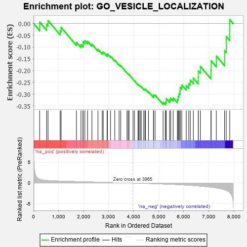
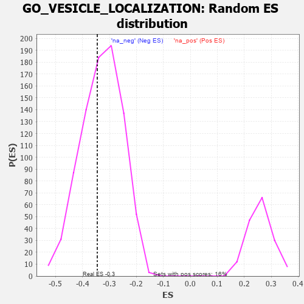

| | | Dataset | 7d |
| Phenotype | NoPhenotypeAvailable |
| Upregulated in class | na_neg |
| GeneSet | GO_VESICLE_LOCALIZATION |
| Enrichment Score (ES) | -0.34526384 |
| Normalized Enrichment Score (NES) | -1.0476539 |
| Nominal p-value | 0.4097969 |
| FDR q-value | 0.80679685 |
| FWER p-Value | 1.0 |
Table: GSEA Results Summary

Fig 1: Enrichment plot: GO_VESICLE_LOCALIZATION
Profile of the Running ES Score & Positions of GeneSet Members on the Rank Ordered List
| PROBE | GENE SYMBOL | GENE_TITLE | RANK IN GENE LIST | RANK METRIC SCORE | RUNNING ES | CORE ENRICHMENT | | 1 | NSF | | | 243 | 0.947 | 0.0066 | No |
| 2 | KIF23 | | | 522 | 0.622 | -0.0040 | No |
| 3 | MX1 | | | 578 | 0.604 | 0.0128 | No |
| 4 | AP3S1 | | | 1063 | 0.471 | -0.0298 | No |
| 5 | MYO1D | | | 1099 | 0.464 | -0.0160 | No |
| 6 | TRAK1 | | | 1714 | 0.354 | -0.0797 | No |
| 7 | CUL3 | | | 1893 | 0.321 | -0.0895 | No |
| 8 | MCFD2 | | | 1975 | 0.309 | -0.0876 | No |
| 9 | BRSK2 | | | 1979 | 0.308 | -0.0759 | No |
| 10 | GOSR2 | | | 2050 | 0.298 | -0.0729 | No |
| 11 | CNIH1 | | | 2159 | 0.283 | -0.0754 | No |
| 12 | SEC13 | | | 2330 | 0.256 | -0.0868 | No |
| 13 | YKT6 | | | 2571 | 0.217 | -0.1087 | No |
| 14 | LMAN1 | | | 2743 | 0.192 | -0.1227 | No |
| 15 | SCFD1 | | | 2783 | 0.185 | -0.1203 | No |
| 16 | GOSR1 | | | 2940 | 0.159 | -0.1338 | No |
| 17 | RAB17 | | | 2950 | 0.157 | -0.1287 | No |
| 18 | MAP2 | | | 3074 | 0.140 | -0.1387 | No |
| 19 | TFG | | | 3243 | 0.114 | -0.1555 | No |
| 20 | KIF1A | | | 3415 | 0.088 | -0.1737 | No |
| 21 | CDK5 | | | 3480 | 0.080 | -0.1786 | No |
| 22 | SYT11 | | | 3732 | 0.036 | -0.2089 | No |
| 23 | CEP19 | | | 3778 | 0.031 | -0.2134 | No |
| 24 | BET1 | | | 3817 | 0.025 | -0.2172 | No |
| 25 | AP3B2 | | | 3974 | -0.002 | -0.2368 | No |
| 26 | TOR1A | | | 4030 | -0.013 | -0.2433 | No |
| 27 | SYNJ1 | | | 4173 | -0.038 | -0.2597 | No |
| 28 | EXOC4 | | | 4182 | -0.039 | -0.2592 | No |
| 29 | GBF1 | | | 4215 | -0.044 | -0.2615 | No |
| 30 | WDR11 | | | 4262 | -0.052 | -0.2653 | No |
| 31 | SAR1A | | | 4304 | -0.060 | -0.2681 | No |
| 32 | STX5 | | | 4400 | -0.077 | -0.2771 | No |
| 33 | KIF3B | | | 4450 | -0.085 | -0.2800 | No |
| 34 | LRRK2 | | | 4467 | -0.087 | -0.2785 | No |
| 35 | SYT4 | | | 4590 | -0.116 | -0.2894 | No |
| 36 | MYO5A | | | 4787 | -0.155 | -0.3081 | No |
| 37 | PCLO | | | 4793 | -0.156 | -0.3025 | No |
| 38 | USO1 | | | 4855 | -0.168 | -0.3036 | No |
| 39 | DCTN2 | | | 5175 | -0.243 | -0.3344 | No |
| 40 | PTEN | | | 5262 | -0.261 | -0.3350 | Yes |
| 41 | MAGI2 | | | 5295 | -0.269 | -0.3284 | Yes |
| 42 | RAB7A | | | 5302 | -0.271 | -0.3185 | Yes |
| 43 | AP3S2 | | | 5433 | -0.303 | -0.3230 | Yes |
| 44 | KIF3A | | | 5480 | -0.313 | -0.3165 | Yes |
| 45 | NDE1 | | | 5578 | -0.339 | -0.3153 | Yes |
| 46 | MX2 | | | 5745 | -0.390 | -0.3210 | Yes |
| 47 | VAMP7 | | | 5777 | -0.399 | -0.3092 | Yes |
| 48 | BBS4 | | | 5806 | -0.407 | -0.2966 | Yes |
| 49 | ARL6 | | | 5847 | -0.417 | -0.2853 | Yes |
| 50 | BBS5 | | | 5862 | -0.421 | -0.2704 | Yes |
| 51 | STK11 | | | 5922 | -0.443 | -0.2604 | Yes |
| 52 | AP3M1 | | | 6100 | -0.506 | -0.2629 | Yes |
| 53 | MYO1E | | | 6200 | -0.537 | -0.2542 | Yes |
| 54 | AP3D1 | | | 6261 | -0.558 | -0.2398 | Yes |
| 55 | BBS2 | | | 6383 | -0.608 | -0.2312 | Yes |
| 56 | CLN3 | | | 6580 | -0.699 | -0.2284 | Yes |
| 57 | ARF1 | | | 6583 | -0.701 | -0.2010 | Yes |
| 58 | TMED2 | | | 6665 | -0.746 | -0.1818 | Yes |
| 59 | BBS7 | | | 7089 | -0.988 | -0.1964 | Yes |
| 60 | RAB1A | | | 7096 | -0.993 | -0.1580 | Yes |
| 61 | MYO7A | | | 7302 | -1.175 | -0.1376 | Yes |
| 62 | PDCD6 | | | 7630 | -1.615 | -0.1153 | Yes |
| 63 | MYO6 | | | 7697 | -1.753 | -0.0546 | Yes |
| 64 | GRIA1 | | | 7836 | -2.260 | 0.0171 | Yes |
Table: GSEA details [plain text format]

Fig 2: GO_VESICLE_LOCALIZATION: Random ES distribution
Gene set null distribution of ES for GO_VESICLE_LOCALIZATION